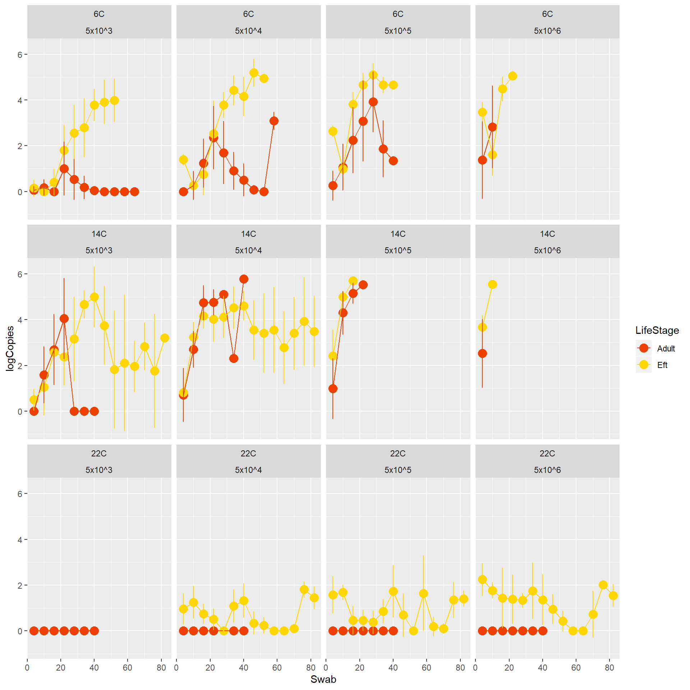
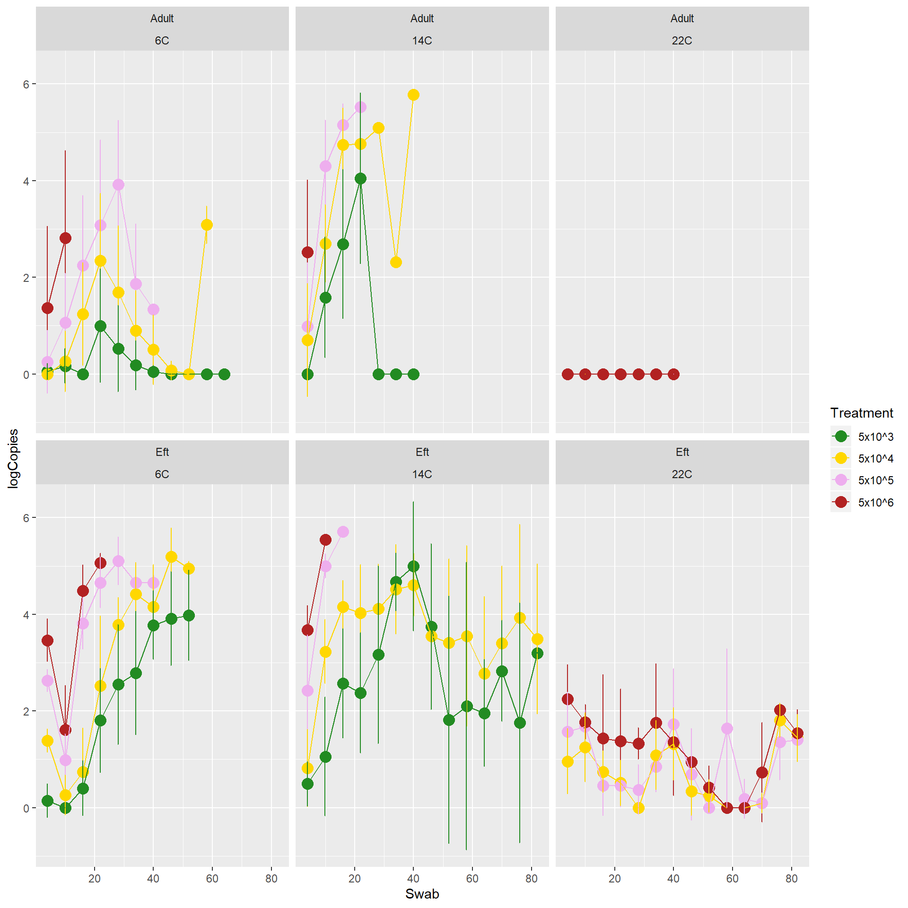

Winter is Coming: Temperature Dependent Virulence of Batrachochytrium salamandrivorans
E. Davis Carter, Debra L. Miller, Brittany A. Bajo, Anna C. Peterson, Markese Bohanon, Kurt Ash, Pattarawan Watcharaanantapong, and Matthew J Gray
Contact Information Lab Website
Thank you for scanning the QR code. Hopefully you will find the additional information included on this page valuable.
Unpublished work relating to Eastern newt Bsal susceptibility
Use of these unpublished data is not permitted without permission granted from Dr. Matthew Gray
Additional Methods

1. Bsal was grown inside an incubation chamber at 15C prior to being harvested for the experiment.

2. Animals were exposed in 200mL tubes containing 9mL of H2O and 1mL of the assigned Bsal dose.

3. Animals were held in the inoculation tubes for 24hrs.

4. Following exposure animals were placed in individuals containers and held at a constant temperature inside environmental chambers.

5. Animals were examined twice daily for signs of disease.

6. Animals were swabbed every 3 days and at necropsy. DNA was extracted from the swabs to determine infection status and Bsal load.
Additional Results
The figure shown below displays how log (Bsal copies+1) growth differs between life-stages exposed. Efts and adult newts reach similar loads at 14C, however efts exposed at 6C and 22C develop higher Bsal loads.

The figure shown below displays how log (Bsal copies+1) growth increases after exposure for each exposure dose. Bsal loads at lower doses increase over time, however it takes a longer duration for the growth to reach loads experienced by those exposed to the highest exposure doses.
